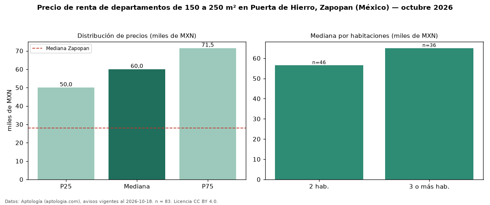

Precio de renta de departamentos de 150 a 250 m² en Puerta de Hierro, Zapopan (México) — octubre 2026
En Puerta de Hierro, Zapopan (México), la mediana de canon mensual de departamentos de 150 a 250 m² es MXN 60.000, según 83 avisos vigentes. Frente a la mediana de todos los departamentos en renta de Puerta de Hierro (MXN 50.000, n = 223), queda 20 % por encima; este segmento reúne el 37 % de esos avisos. Por metro cuadrado, la mediana es MXN 333/m² al mes (n = 83), 4 % por debajo del conjunto de referencia (MXN 348/m²). El área mediana anunciada es 172 m². El segmento con más oferta es el de 2 habitaciones (46 avisos, mediana MXN 56.500); pasar de 2 habitaciones a 3 o más habitaciones cambia la mediana +15 %. La mediana de todos los departamentos en renta de Zapopan es MXN 28.000 (+114 % de diferencia). La mitad central de los avisos va de MXN 50.000 a MXN 71.500 (razón 1,4), una dispersión moderada. Datos: Aptología (aptologia.com), CC BY 4.0 — https://www.aptologia.com/. Archivos: PDF, CSV con las cifras y gráfica PNG.

| Avisos únicos | 83 |
|---|---|
| Percentil 25 | COP 50.000 |
| Mediana | COP 60.000 |
| Percentil 75 | COP 71.500 |
| Mediana por m² | COP 333 |
Fuente: avisos vigentes de portales inmobiliarios recopilados por Aptología, deduplicados (mínimo 30 avisos únicos por celda). Precios pedidos, no cerrados. Fecha: 2026-10-18.